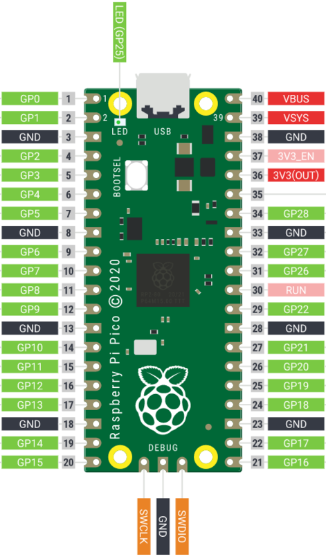

Vorhersage: Welche Ergebnisse sind Floats oder Strings? Ergibt die letzte Zeile 14 oder 20?
Fehler liefern Hinweise
Lest zuerst die letzte Zeile
In Thonny ausprobieren · Baut diesen Tippfehler absichtlich ein
>>> pritn("Hello")
Traceback (most recent call last):
File "<stdin>", line 1
NameError: name 'pritn' is not defined
1 · Benennen
NameError
2 · Finden
Zeile 1
3 · Vergleichen
pritn statt print
Ändert nur pritn zu print und führt es erneut aus.
Funktioniert es, war der Tippfehler die Ursache.
02
Teil 2 · Gespeicherte Programme
Von einer Zeile zum Skript
Mit einem gespeicherten Programm planen wir eine Abfolge und führen sie erneut aus.
Skriptmodus
Euer erstes Skript öffnen und ausführen
In Thonny ausprobieren · Herunterladen, öffnen, vorhersagen, dann Run
Herunterladen → öffnen → starten
Klickt auf 00_first_script.py, um die Datei nach Downloads herunterzuladen.
Öffnet in Thonny links unter Dateien den Ordner Downloads. Doppelklick auf 00_first_script.py.
Lasst Lokales Python 3 ausgewählt. Sagt die Ausgabe voraus und klickt dann auf den grünen Play-Button (Run).
23
2 · Dateien auf eurem Computer 3 · Grüner Play-Button (Run) Das Skript öffnet sich im Editor; die Ausgabe erscheint in der Shell.
Zeile für Zeile lesen
Verfolgt den Ablauf vor Run
In Thonny ausprobieren · Skript ändern, vorhersagen, speichern, dann Run
from time import sleep
print("Three...")
sleep(1)
print("Two...")
sleep(1)
print("One...")
Mit import nutzen wir fertige Werkzeuge.from time import sleep stellt die Pausenfunktion sleep aus Pythons Modul time bereit (einem Werkzeugkasten für Zeitaufgaben). sleep(1) wartet eine Sekunde.
Vorhersage: Welche Wörter erscheinen, in welcher Reihenfolge und mit welchen Pausen?
Eure Hardware kennenlernen
Was ist der Raspberry Pi Pico?
Anschauen und besprechen · USB bleibt noch getrennt

Ein winziger Computer für Elektronik
Der Pico ist eine Mikrocontroller-Platine: ein kleiner Computer, der euer Programm ausführt und damit elektronische Bauteile steuert.
Wir programmieren ihn in Python
Wir schreiben Code in Thonny. Der Pico führt ihn mit MicroPython aus, einer Python-Version für Mikrocontroller.
Er kann messen und steuern
Über seine Anschlusspins kann er Taster und Sensoren auslesen, LEDs steuern und Töne erzeugen. Heute: ein Licht ein- und ausschalten.
Vom Computer zum Pico
Den Pico in Thonny verbinden
Gemeinsam ausprobieren · USB verbinden und Interpreter wechseln
Verbindet den Pico per USB-Kabel mit dem Computer.
Wechselt unten rechts in Thonny von Lokalem Python 3 zu MicroPython (Raspberry Pi Pico). Lasst den Port automatisch erkennen.
Prüft, ob >>> in der Shell erscheint. Programme laufen jetzt auf dem Pico.
Dateien auf zwei Geräten
Files zeigt jetzt Computer und Pico. Lasst die Kursdateien auf dem Computer; Run überträgt das offene Programm auf den Pico.
Gleicher Editor, anderer Computer
Die Shell spricht jetzt mit MicroPython auf dem Pico, nicht mehr mit lokalem Python auf eurem Computer.
Euer erstes Pico-Programm
Herunterladen, starten, LED beobachten
In Thonny ausprobieren · Herunterladen, öffnen, grünen Play-Button anklicken
Klickt auf 01_hello_pico.py, um die Datei nach Downloads herunterzuladen.
Öffnet links unter Dateien den Ordner Downloads auf eurem Computer. Doppelklick auf 01_hello_pico.py.
USB verbunden, MicroPython (Raspberry Pi Pico) ausgewählt? Klickt auf den grünen Play-Button (Run).
Sicherheitszeilen behalten:try führt die Abfolge aus; finally schaltet die LED aus, auch bei Fehlern oder Stop.
Beobachtet: die Wörter in der Shell und die eingebaute LED. Was verändert sich?
from machine import Pin
from time import sleep
led = Pin("LED", Pin.OUT)
try:
print("Three...")
led.on()
sleep(1)
print("Two...")
led.off()
sleep(1)
print("One...")
led.on()
print("Hello, physical world!")
sleep(1)
finally:
led.off()
Hardware-Begriffe
Drei Zeilen verbinden Python mit dem Pico
Besprechen · Erklärt das gerade ausgeführte Programm
Pin
Gibt Python Zugriff auf einen Pin des Pico.
"LED"
Bezeichnet die eingebaute LED.
Pin.OUT
Legt fest, dass der Pin ein Signal ausgibt.
from machine import Pin
led = Pin("LED", Pin.OUT)
led.on()
Diese Zeilen stehen schon in 01_hello_pico.py; ihr müsst
sie nicht auswendig lernen. Denkt an das gerade ausgeführte Programm:
Was hat sich auf dem Bildschirm verändert und was am Pico?
Variablen
Variablen: Namen für Werte
Besprechen · Sagt die Ausgabe von print(message) voraus
Eine Variable ist ein Name für einen Wert. Euer Programm kann diesen Namen später verwenden. Ihr könnt derselben Variable einen neuen Wert geben.
message = "Team Comet"
print(message)
Mit = einen Wert zuweisen
message ist der Variablenname. "Team Comet" ist der Wert, den wir ihr zuweisen.
Die Variable verwenden
print(message) nutzt ihren Wert. Die Shell zeigt Team Comet, nicht das Wort message.
Besprechen · Verfolgt den vollständigen Stromkreis
led.on() GP15 wird zu 3,3 V
→
Strom fließt Widerstand schützt LED
→
LED leuchtet dann fließt Strom zu GND
led.off() GP15 wird zu 0 V
→
Kein Spannungsunterschied Stromfluss endet
→
LED ist dunkel
Ändert in einer Kopie von 02_variable_blink.py nur
Pin("LED", Pin.OUT) zu Pin(15, Pin.OUT).
Fehlersuche in physischen Systemen
Code, Schaltung oder Annahme?
Besprechen · Wählt für jede Spalte eine genaue Prüfung
Code
Falscher Pin? Name falsch geschrieben? Programm läuft noch?
Schaltung
LED umgedreht? Kabel um eine Reihe versetzt? Widerstand fehlt?
Annahme
Haben wir die falsche Ausgabe erwartet oder die falsche LED betrachtet?
Wenn die externe LED dunkel bleibt: Führt zuerst die
Datei für die eingebaute LED aus. Klappt das, ladet den
GP15-EIN/AUS-Test herunter und führt ihn aus. Leuchtet die LED weiterhin nicht, drückt
Stop, trennt USB und vergleicht die Schaltung mit dem Diagramm.
04
Teil 4 · Euer Projekt
Sendet eine geheime Nachricht
In der Startdatei blinkt die LED bereits einmal kurz. Macht daraus eure eigene Nachricht aus kurzen und langen Lichtsignalen.
Euer Projekt
Erzeugt eine Nachricht aus Licht
In Thonny ausprobieren · Starter öffnen, Aufräumen behalten
Für eine Demonstration, einen gemeinsamen Neustart oder den Vergleich nach eurem eigenen funktionierenden Signal. Vergleicht Zeitvariablen und Signalgruppen; arbeitet in eurem Starter weiter.
Dateinamen anklicken, nach Downloads herunterladen und in Thonny links in der Dateiansicht des Computers öffnen. Nur mit MicroPython und passender geprüfter Schaltung ausführen.